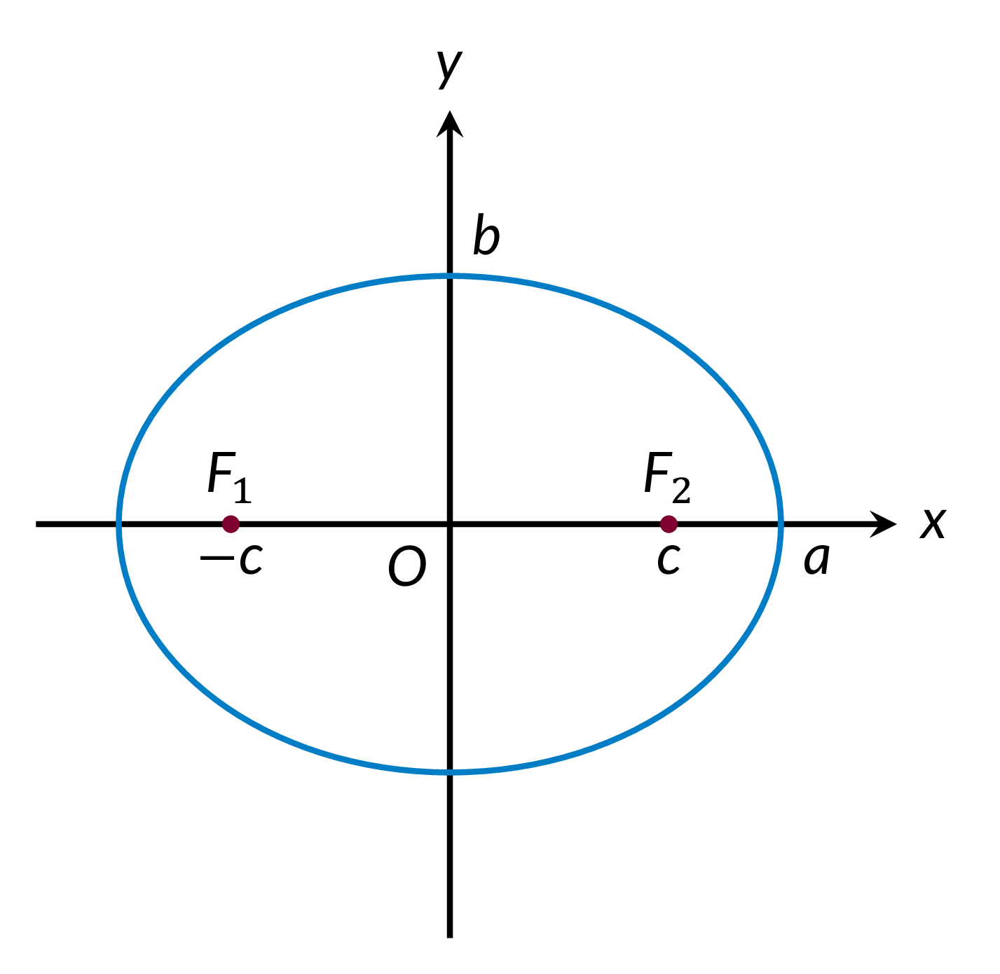
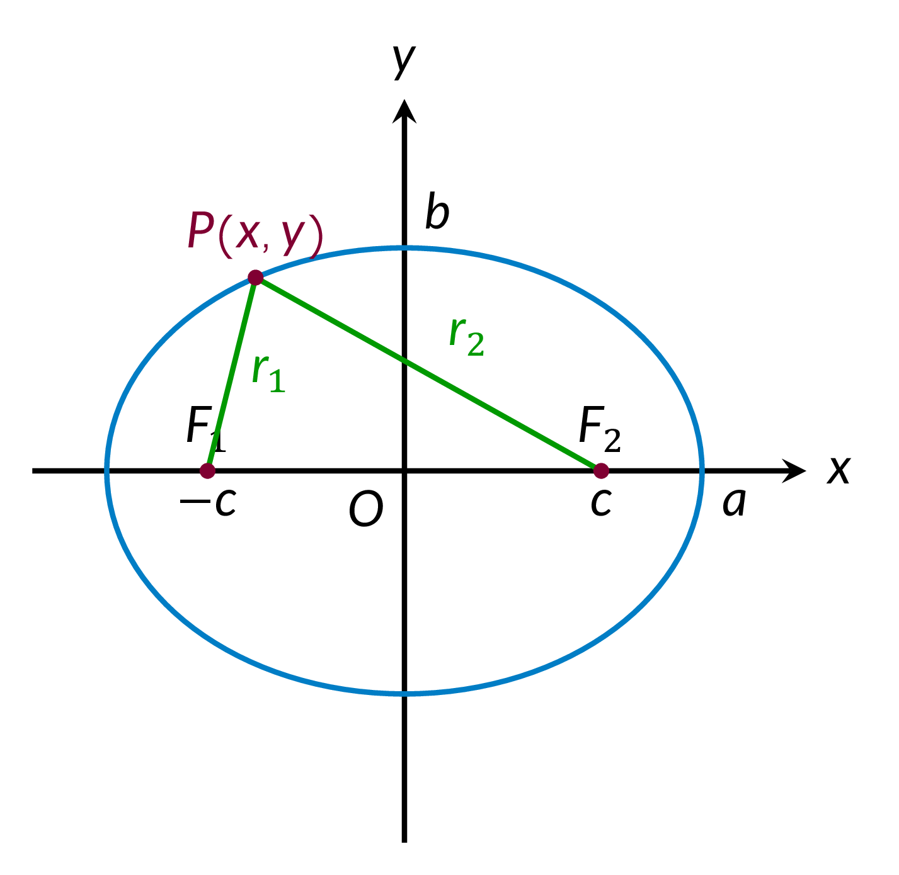

Semimajor axis: $a$
Semiminor axis: $b$
Foci: $F_1(-c,0), F_2(c,0)$
Distance between the foci: $2c$
Eccentricity: $e$
Real numbers: $A, B, C,D, E, F, t$
Perimeter: $L$
Area: $S$
Equation of an Ellipse (Standard Form) $$ \dfrac{x^2}{a^2} + \frac{y^2}{b^2} = 1$$

$r_1 + r_2 = 2a$,
where $r_1, r_2$ are distances from any point $P(x,y)$ on the ellipse to the two foci.

$$\begin{ailgned} &a^2 = b^2 + c^2 \\\\ &\text{Eccentricity } e = \frac{c}{a} \lt 1\\\\ &\text{Equations of Directrices} \\ &x = \pm\frac{a}{e} = \pm \frac{a^2}{c}\\\\ &\text{Parametric Form} \\ &\begin{cases} x = a\cos t \\ y = b\sin t \end{cases},\,0 \le t \le 2\pi \end{aligned}$$
General Form $$Ax^2 + Bxy +Cy^2 + Dx + Ey + F = 0,$$ where $B^2 - 4AC \lt 0$.
General Form with Axes Parallel to the Coordinate Axes $$Ax^2 + Cy^2 + Dx + Ey + F = 0,$$ where $AC \gt 0$.
Circumference $$L = 4aE(e),$$ where the function $E$ is the complete elliptic integral of the second kind.
Approximate Formulas of the Circumference $$\begin{aligned} &L = \pi\left(1.5(a + b) - \sqrt{ab}\right), \\\\ &L = \pi\sqrt{2\left( a^2 + b^2\right)} \end{aligned}$$
$S = \pi ab$